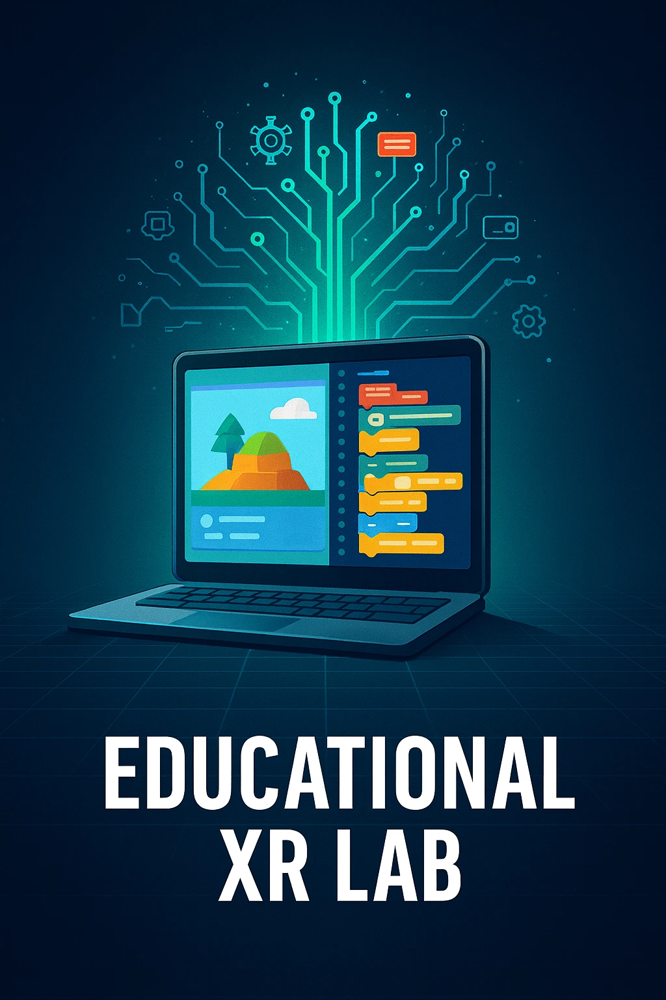

Demos, Alphas & Betas – Live Testing Work

This page collects shorter-form QA work completed on demos, alpha builds, beta builds, limited-access tools, and other live test environments where usability, stability, and real-world behaviour matter more than polished presentation.
The focus here is on practical testing in messier conditions: identifying player-facing defects quickly, spotting friction in onboarding or progression, and documenting issues clearly enough to be actionable.
These entries are intentionally lighter than my main case studies. The goal is to show consistent hands-on QA activity, adaptable bug hunting, and useful reporting across active or evolving builds.
Live Testing Lineup
Firewing 64 - Destructive Testing
Short-form exploratory QA session applying a structured-to-destructive testing approach to identify system weaknesses, input reliability issues, and clarity problems under pressure in an early build environment.
- Goal: Apply destructive testing techniques in a focused session to surface meaningful issues quickly, supported by clear evidence and concise reporting.
- Testing focus: Input behaviour under stress, system and state conflicts during combined actions, and UI clarity during fast or chaotic gameplay, with attention to player understanding and control.
- Why this matters: Demonstrates the ability to adapt structured learning into practical testing, focusing on system behaviour under pressure rather than ideal conditions.
- Outcome: Identified several issues where systems behaved correctly in isolation but became inconsistent under stress, impacting reliability and clarity of player actions.

Creator Tool UX & Recovery Testing - Exploratory Live Testing
Short-form exploratory QA focused on first-time user workflows, recovery behaviour, and clarity in a complex interactive environment, with attention on how easily a new user can understand tasks, recover from mistakes, and continue without losing progress.
- Goal: Evaluate whether a first-time user can begin confidently, follow the intended workflow, complete core creation tasks, and recover cleanly from errors or confusion using clear evidence and practical reporting.
- Testing focus: Onboarding clarity, “what do I do now?” friction, workflow comprehension, navigation context, object interaction, save and loss-prevention behaviour, undo or redo expectations, and basic accessibility checks.
- Why this matters: Shows transferable QA thinking across interactive systems, especially around onboarding, UI clarity, user confusion, recovery design, and accessibility rather than pure feature correctness alone.
- Deliverables: Charter-based session notes and evidence, reproducible issue logging, short UX and accessibility findings with practical recommendations, and a summary grouped by clarity, editor usability, recovery, and accessibility.
- Context: Product name is kept anonymous by agreement. Public coverage stays summary-level unless named publication is approved.

FAQ
How is this page different from the main portfolio?
The main portfolio focuses on structured, timeboxed game QA case studies with deeper analysis and fuller documentation. This page is lighter and more flexible, grouping shorter-form live testing work where quick judgement, usability thinking, and practical reporting matter most.
What counts as live testing?
Demos, alpha builds, beta builds, limited-access environments, and other real-world testing contexts where builds may still be unstable or evolving, and where user-facing issues can surface quickly.
Will every entry here be a full public case study?
No. Some entries may stay lightweight, anonymous, or summary-only depending on access terms, confidentiality, or the nature of the build. The purpose of this page is to show practical QA activity and consistent testing output, not force every project into the same format.
Why include a non-game interactive tool here?
Because the QA thinking is transferable. Testing first-time user workflows, clarity, and recovery behaviour applies directly to games, especially in onboarding, UI understanding, player confusion, and save or recovery systems. This shows I can test complex interactive environments and identify real user friction, not just follow scripted checks.
Summary
This page covers the live, lighter, and less controlled side of my QA work: short-form testing on evolving builds, real-user workflows, usability friction, stability risks, and practical issue reporting. It complements my main portfolio by showing consistent hands-on testing outside larger flagship case studies.
Email Me Connect on LinkedIn Back to Exploratory QA & Live Testing